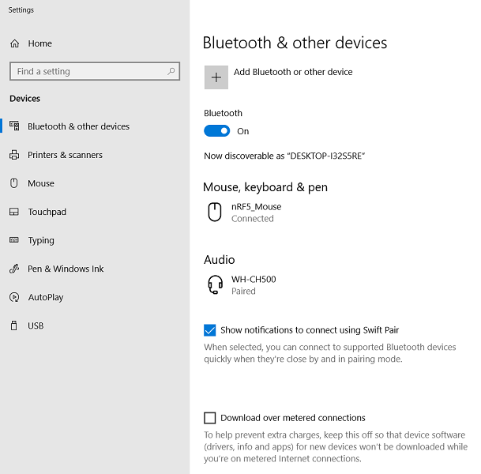
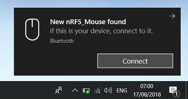
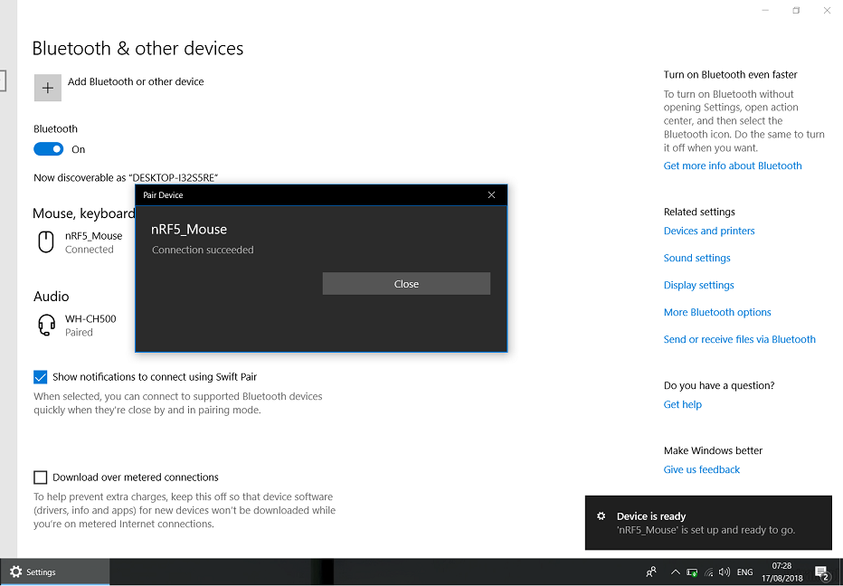
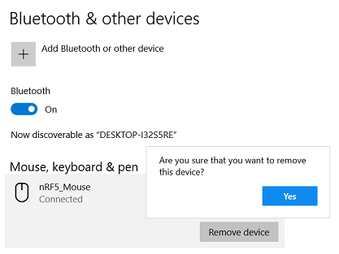

This example requires one of the following SoftDevices: S112, S132, S140
Important: Before you run this example, make sure to program the SoftDevice.
All provided HID examples conform with USB HID usage tables, http://www.usb.org/developers/hidpage.
The HID Mouse Application is an example that implements the HID over GATT profile for mouse using the hardware delivered in the nRF5 Development Kit.
The application includes the three mandatory services needed for the HID over GATT profile:
- Note
- This application is not power optimized!
- The application will stop advertising and go to system-off mode after:
- 3 minutes and 30 seconds if no advertising with whitelist was done,
- 4 minutes if advertising with whitelist was done.
- This application supports Swift Pair feature. For more details refer to: Microsoft Swift Pair for Bluetooth Peripherals.
Push Button 1 to restart advertising.
Setup
You can find the source code and the project file of the example in the following folder: <InstallFolder>\examples\ble_peripheral\ble_app_hids_mouse
Button assignments - in addition to those defined in BSP BLE Button Assignments:
- During Connection:
- Button 1: Move mouse pointer 5 pixels to the left
- Button 2: Move mouse pointer 5 pixels upward
- Button 3: Move mouse pointer 5 pixels to the right
- Button 4: Move mouse pointer 5 pixels downward
Testing
The HID Mouse Application must be connected to a Microsoft Windows 8 computer with a Bluetooth radio. When connected, the application acts as a mouse, enabling the user to move the mouse pointer using four push buttons on the board.
To test the application:
- Compile and program the application. Observe that the BSP_INDICATE_ADVERTISING state is indicated.
- On the Windows 8 computer, search for Bluetooth devices, and connect to the device named "nRF5_Mouse". Observe that the BSP_INDICATE_CONNECTED state is indicated.
- Push Button 1 on the board. Observe that the mouse pointer on the Windows 8 computer moves to the left.
- Push Button 2. Observe that the mouse pointer on the Windows 8 computer moves up.
- Push Button 3. Observe that the mouse pointer on the Windows 8 computer moves to the right.
- Push Button 4. Observe that the mouse pointer on the Windows 8 computer moves down.
- Disconnect the computer from the device by removing the device from the computer's device list. Observe that for the first period, the BSP_INDICATE_ADVERTISING_DIRECTED state is indicated, then it switches to BSP_INDICATE_ADVERTISING_WHITELIST, then to BSP_INDICATE_ADVERTISING, then to BSP_INDICATE_ADVERTISING_SLOW, and then all off.
- Reset the device while pressing Button 2 to erase bond info. Repeat step 2, and check if the device can control the mouse pointer on the computer.
- Disconnect the device from Windows 8. This removes the bond info from the computer.
- Start a search for Bluetooth devices and observe that while the device is advertising with whitelist, Windows 8 is not able to discover the device.
The device should be discoverable again after it switches to advertising mode.
Testing the Swift Pair feature
You can also test the Swift Pair feature of this application. The feature was introduced in the April 2018 Update of Windows 10 (version 1803).
- Check if you have the correct version of Windows 10.
- Make sure that you enabled Swift Pair feature in Windows 10: in Settings > Bluetooth & other devices, check "Show notifications to connect using Swift Pair".

Bluetooth settings with Swift Pair feature enabled.
- Compile and program the application. Observe that the BSP_INDICATE_ADVERTISING state is indicated.
- Observe that a pop-up notification is displayed on Windows 10 device. If you cannot see it, move the peripheral device closer to the computer.

Notification triggered by nRF5_Mouse during advertising.
- Click Connect and observe that the BSP_INDICATE_CONNECTED state is indicated. When the devices are successfully paired, the appropriate Pair Device notification appears.

Pair Device notification for successful connection.
- Push buttons to move the mouse pointer around like it is described in the previous testing scenario.
- Reset the peripheral device. Observe that it reconnects and that no pop-up notifications are displayed on Windows 10 this time.
- Check if the device can control the mouse pointer on the computer after reconnection.
- Disconnect the computer from the device by removing the nRF5_Mouse device from the computer's device list. This also removes the bonding information from your computer.

Removing the nRF5_Mouse device.
Testing with nRF Connect
You can also test the application with nRF Connect for Desktop by performing the following steps:
- Compile and program the application. Observe that the BSP_INDICATE_ADVERTISING state is indicated.
- Connect to the device from nRF Connect (the device is advertising as "nRF5_Mouse"), then bond to the device. To bond, click the settings button for the device in nRF Connect, select Pair, check Perform Bonding, and click Pair. Wait until the bond is established before you continue. Observe that the BSP_INDICATE_CONNECTED state is indicated.
- Observe that the services are shown in the connected device and that you can start receiving values for the Battery Level Service by clicking the Play button. Battery Level notifications are being received every two seconds.
- Click the Play button for all HID Report characteristics.
- Push Button 1 on the board. Observe that a notification on one of the HID Report characteristics is received, containing the value 'FB0F00'. The format used for mouse reports is the following byte array: [Buttons, X-translation, Y-translation].
- Push Button 2. Observe that a notification on the same HID Report characteristic is received, containing the value '00B0FF'.
- Push Button 3. Observe that a notification on the same HID Report characteristic is received, containing the value '050000'.
- Push Button 4. Observe that a notification on the same HID Report characteristic is received, containing the value '005000'.
- Disconnect the device in nRF Connect. Observe that no new notifications are received, and the device is advertising with whitelist.
- As bond information is preserved by nRF Connect, it should be possible to immediately reconnect to the device by clicking the Connect button again. Observe that Battery Level notifications are being received every two seconds.